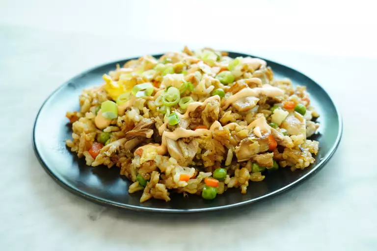

Fried Rice

Easy 10 minute fried rice recipe, with natural flavours and
60 grams of protein.
Ingredients
- 2 cups of cooked rice
- 1/2 cup of frozen peas and carrots
- 1/4 cup of diced onion
- 2 cloves of garlic, minced
- 2 eggs, beaten
- 3 tablespoons of soy sauce
- 2 tablespoons of vegetable oil
- Salt and pepper to taste
Steps
- Cook rice according to package instructions and set aside.
- Heat oil in a large skillet or wok over medium-high heat.
- Add diced onions, garlic, and ginger, and stir-fry until fragrant.
- Add diced carrots and cook for 2-3 minutes.
- Add peas, corn, and diced bell pepper, and cook for another 2-3 minutes.
- Push the vegetables to the side of the skillet or wok and add beaten eggs.
- Scramble the eggs until cooked and mix them with the vegetables.
- Add the cooked rice to the skillet or wok and mix well.
- Add soy sauce, oyster sauce, and sesame oil to the skillet or wok and mix well.
- Cook for another 2-3 minutes, stirring constantly, until the rice is heated through and evenly coated with the sauce.
- Garnish with sliced green onions and serve hot.
ss